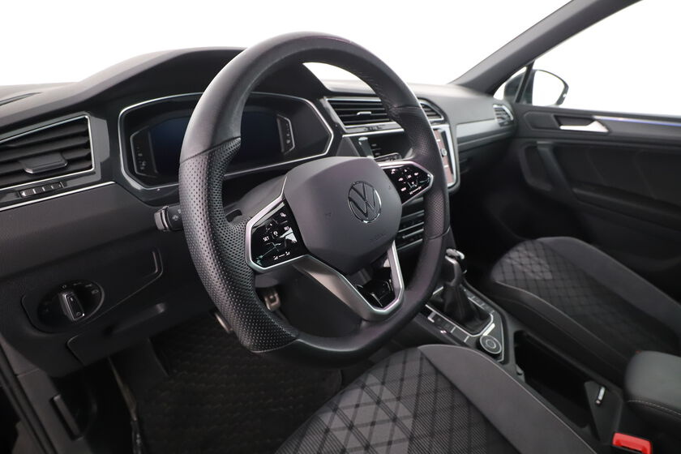

Prestazioni e caratteristiche principali
| Motore | 2.0 TSI / 2.0 TDI |
|---|---|
| Potenza | 190 CV (TSI) / 200 CV (TDI) |
| Coppia | 320 Nm (TSI) / 400 Nm (TDI) |
| 0-100 km/h | 7,7 secondi (TSI) / 7,5 secondi (TDI) |
| Velocità massima | 220 km/h (TSI) / 224 km/h (TDI) |
| Trazione | Anteriore (FWD) / Integrale (4MOTION) |
| Consumo medio | 6,5 l/100 km (TSI) / 5,8 l/100 km (TDI) |
| CO₂ | 148 g/km (TSI) / 134 g/km (TDI) |